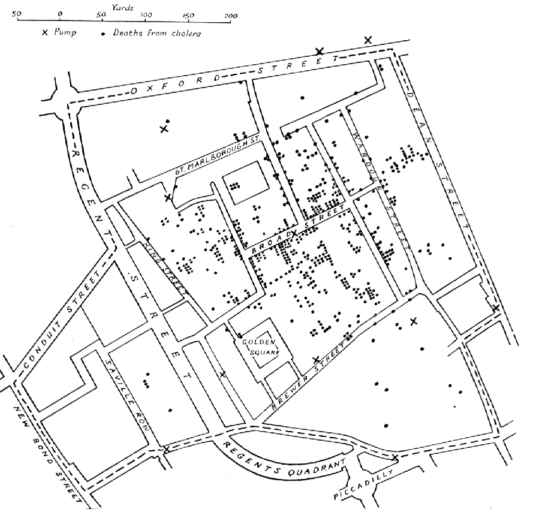
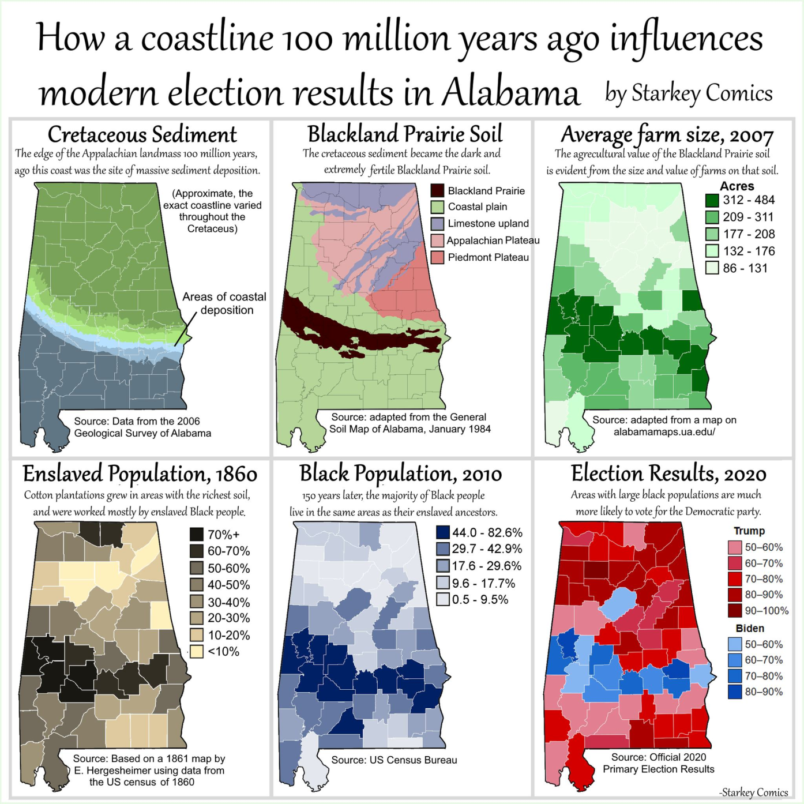
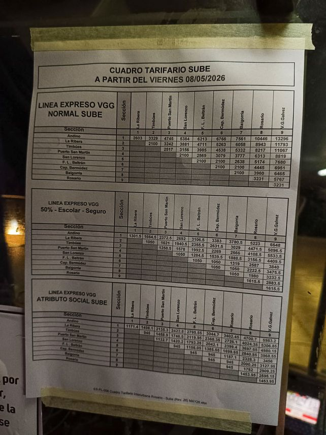
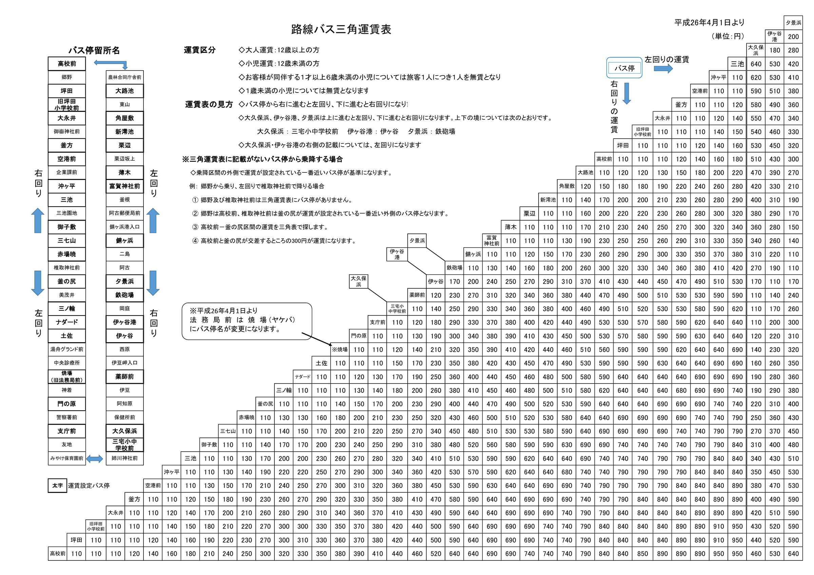
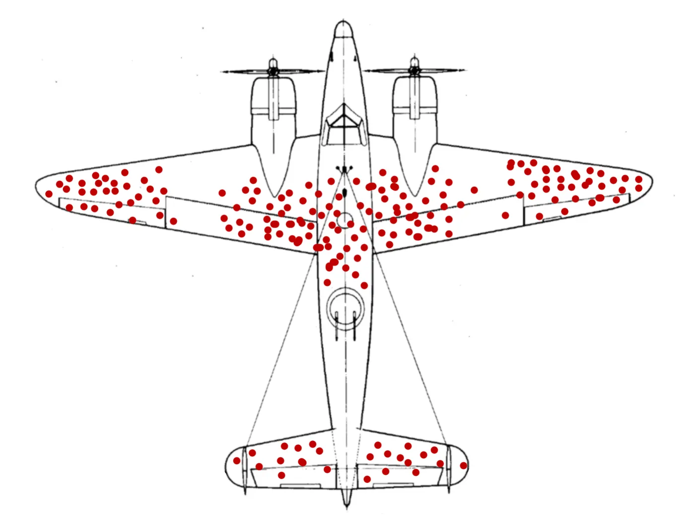
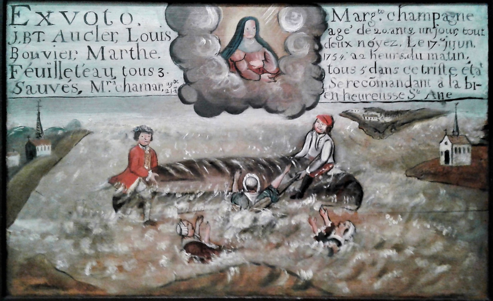

Material de apoyo
Ejemplos para la clase: cada uno con su gráfico, tabla o imagen, los hechos en pocas líneas y las fuentes.
Datos con historia
Patentes: cuánto tardó en agotarse cada serie
Desde abril de 2016 los vehículos nuevos en la Argentina llevan patentes del formato Mercosur: dos letras, tres números y dos letras (AA 000 AA). Las patentes se asignan en orden y la última letra es la que cambia primero.
Cada serie de dos letras iniciales tiene 676.000 combinaciones (1.000 números por 26 × 26 pares de letras finales). Por eso la distancia vertical entre dos puntos es siempre la misma y lo que cambia es el tiempo: entre 8 y 10 meses por serie entre 2016 y 2018, entre 15 y 22 meses entre 2018 y 2024, y 13 meses para la serie AH.
Las fechas son aproximadas al mes: no hay un registro oficial público del día en que se entregó la primera patente de cada serie. Las motos usan otro formato y no están incluidas.
- Wikipedia, «Matrículas automovilísticas de Argentina», tabla «Evolución aproximada del patentamiento actual».
- Infobae, «Las claves de la patente: cómo saber de qué año es un auto según sus letras», 8 de julio de 2026.
- El Litoral, «Las patentes argentinas llegaron a "AI" casi sobre el cierre de 2025», diciembre de 2025.
- Ámbito, «Cómo calcular la antigüedad del vehículo mirando la patente».
Datos con historia
Lluvia del verano y rendimiento de la soja en Pergamino
El Ministerio de Agricultura publica desde 1941 la superficie sembrada y cosechada, la producción y el rendimiento de la soja de cada departamento del país. La lluvia sale de NASA POWER, que estima el clima de cualquier coordenada a partir de satélites y modelos; no es el registro de una estación.
De las cinco campañas con menos lluvia entre diciembre y marzo (2022/23, 2017/18, 2020/21, 2003/04 y 2008/09), cuatro están entre las seis de menor rendimiento; la excepción es 2003/04. En 2022/23 llovieron 224 mm, el rendimiento fue de 1.857 kg/ha y se cosecharon 131.202 de las 163.102 hectáreas sembradas.
El rendimiento también depende de otros factores (variedades, manejo, fecha de siembra) y tiende a subir con los años, así que la lluvia explica una parte de la variación, no toda.
- Ministerio de Agricultura, Ganadería y Pesca, «Soja: siembra, cosecha, producción y rendimiento», datos.gob.ar. Departamento de Pergamino, campañas 2000/01 a 2024/25.
- NASA Langley Research Center, POWER Project, variable PRECTOTCORR mensual en latitud −33,89, longitud −60,57. Consultado el 31 de octubre de 2026.
Datos con historia
La cebada de Morris: un dato que parecía un error
En 1931 y 1932 se ensayaron diez variedades de cebada en seis localidades de Minnesota. Los datos, publicados por Immer, Hayes y Powers en 1934, se volvieron un ejemplo clásico de visualización.
En cinco localidades el rendimiento de 1932 fue menor que el de 1931 en nueve o diez variedades. En Morris fue mayor en las diez. En Visualizing Data (1993), William Cleveland sostuvo que lo más probable era que los años de Morris estuvieran invertidos por error.
En 2013 Kevin Wright revisó los ensayos de 1927 a 1936 y encontró que en esa época las diferencias entre localidades de un año a otro eran grandes y frecuentes, por sequías, plagas y enfermedades. Concluyó que el resultado de Morris no era sorprendente y que los datos probablemente son correctos. En la serie ampliada faltan los rendimientos de Morris de 1933 y 1934; según las notas del conjunto de datos, por la sequía.
- F. R. Immer, H. K. Hayes y L. Powers, «Statistical determination of barley varietal adaptation», Journal of the American Society of Agronomy, 26, 1934, pp. 403–419.
- William S. Cleveland, Visualizing Data, Hobart Press, 1993.
- Kevin Wright, «Revisiting Immer's barley data», The American Statistician, 67(3), 2013, pp. 129–133. Resumen: «There's no mistake in the barley data», R-bloggers, 2014.
- Datos: agridat,
minnesota.barley.yield; versión 1931–1932 enlattice::barleyy en vega-datasets.
Datos con historia
El mapa del cólera de John Snow (Londres, 1854)


El 31 de agosto de 1854 empezó un brote de cólera en el Soho, en Londres. Según el médico John Snow, en un radio de unos 230 metros hubo más de quinientos ataques fatales en diez días. Snow marcó cada muerte en un mapa, frente a la casa donde ocurrió, junto con las bombas públicas de agua. Las muertes se concentraban alrededor de la bomba de Broad Street.
Snow también anotó dónde casi no hubo muertes. En el asilo de Poland Street, rodeado por casas con víctimas, murieron 5 de sus 535 internos: el asilo tenía un pozo propio. En la cervecería de Broad Street, ninguno de sus más de setenta trabajadores tuvo cólera grave: tomaban cerveza y la cervecería también tenía su pozo.
El 7 de septiembre Snow presentó sus observaciones a las autoridades de la parroquia de St. James y al día siguiente se retiró la manija de la bomba. Según la tabla del propio Snow, los casos nuevos ya venían bajando: 143 el 1 de septiembre y 12 el día 8.
- John Snow, On the Mode of Communication of Cholera, 2.ª ed., Londres, John Churchill, 1855 (Proyecto Gutenberg).
- Centers for Disease Control and Prevention, «150th Anniversary of John Snow and the Pump Handle», MMWR, 53(34), 2004.
- Museum of London, «John Snow: Cholera & the Broad Street pump».
Datos con historia
Una costa de hace 100 millones de años y las elecciones en Alabama

La infografía pone en secuencia seis mapas de Alabama hechos con fuentes distintas: el Servicio Geológico de Alabama, un mapa de suelos de 1984, el tamaño medio de las granjas en 2007, un mapa de 1861 con datos del censo de 1860, el censo de 2010 y los resultados electorales de 2020.
Hace unos 100 millones de años, durante el Cretácico, la costa pasaba por el centro del actual Alabama y dejó sedimentos que formaron un suelo oscuro y fértil, la llamada pradera negra (Black Belt). En esa franja se concentraron las plantaciones de algodón y la población esclavizada en 1860; en 2010 la mayoría de la población negra seguía viviendo ahí, y en 2020 esos condados votaron mayoritariamente al Partido Demócrata.
La relación ya había sido señalada por el biólogo marino Craig McClain en 2012, para una franja de condados de varios estados del sur. Los mapas muestran coincidencias espaciales a lo largo del tiempo; cada paso de la cadena se apoya en investigaciones históricas, no solo en la superposición de los mapas.
- Starkey Comics, «How a coastline 100 million years ago influences modern election results in Alabama», 11 de junio de 2021.
- Craig McClain, «How presidential elections are impacted by a 100 million year old coastline», 12 de octubre de 2012 (versión de una nota publicada en Deep-Sea News en junio de 2012).
- Smithsonian Magazine, «Obama could win 2012 because the South used to be underwater», 2012.
Tablas que dibujan un mapa
El cuadro tarifario del Expreso VGG (Gran Rosario)

Los colectivos interurbanos del Gran Rosario llevan pegado un cuadro con el precio del boleto entre cada par de localidades. La línea Expreso VGG une Andino, al norte, con Villa Gobernador Gálvez, al sur de Rosario, pasando por La Ribera, Timbúes, Puerto General San Martín, San Lorenzo, Fray Luis Beltrán, Capitán Bermúdez, Granadero Baigorria y Rosario.
Como el viaje de ida y el de vuelta cuestan lo mismo, se completa solo la mitad del cuadro. El precio crece con la distancia: las localidades aparecen en el cuadro en el mismo orden que en el mapa, y la diferencia de precio entre dos de ellas da una idea de cuánto las separa. El boleto mínimo, $2.100, se repite entre localidades vecinas.
El cuadro rige desde el 8 de mayo de 2026 y tiene tres bloques: tarifa normal con SUBE, 50 % (escolar y seguro) y atributo social.
- La Capital, «Llegó el aumento del transporte interurbano del Gran Rosario: cuánto cuesta el boleto», mayo de 2026 (foto del cuadro).
- Mapa: © colaboradores de OpenStreetMap, licencia ODbL.
Tablas que dibujan un mapa
Un colectivo que da la vuelta a una isla (Miyake-jima, Japón)

Miyake-jima es una isla volcánica de las islas Izu, a unos 180 km de Tokio, con una costa casi circular de 38 km y unos 8 km de diámetro. Dos líneas de colectivo hacen las mismas paradas alrededor de la isla, una en sentido horario y otra en sentido antihorario.
El cuadro de tarifas es triangular, como el de Rosario, pero en una ruta circular entre dos paradas se puede ir por un lado o por el otro de la isla, y el precio depende del recorrido. El propio cuadro explica cómo leerlo: desde cada parada, hacia la derecha se lee el precio de la vuelta en un sentido (左回り) y hacia abajo, el del otro (右回り). Las tarifas van de 110 a 950 yenes.
Las paradas en negrita son las que tienen tarifa propia; para subir o bajar en las demás se toma la parada con tarifa más cercana por fuera del tramo.
- Municipio de Miyake, «路線バス三角運賃表» (cuadro triangular de tarifas del colectivo de línea), 2014.
- Wikipedia, «Miyake-jima».
- Mapa: © colaboradores de OpenStreetMap, licencia ODbL.
Lo que falta revela lo que pasó
Abraham Wald y los aviones que no volvieron


| Parte | Superficie (%) | Impactos en los que volvieron (%) | Probabilidad de caer por un impacto |
|---|---|---|---|
| Motores | 26,9 | 19,3 | 0,39 |
| Fuselaje | 34,6 | 38,6 | 0,05 |
| Sistema de combustible | 15,4 | 15,4 | 0,15 |
| Otras partes | 23,1 | 26,7 | 0,02 |
| Avión completo | 100 | 100 | 0,15 |
Durante la Segunda Guerra Mundial, el matemático Abraham Wald trabajó en el Statistical Research Group de la Universidad de Columbia, que hacía análisis para las fuerzas armadas de los Estados Unidos. En ocho memorandos de 1943 propuso un método para estimar la vulnerabilidad de un avión a partir de los daños de los aviones que sobrevivían.
El punto de partida es que solo se pueden inspeccionar los aviones que vuelven. Si una parte recibe menos impactos de los que le corresponderían por su superficie, es porque los aviones alcanzados ahí tienden a no volver. En el ejemplo de la tabla, los motores ocupan el 26,9 % de la superficie pero reciben el 19,3 % de los impactos observados; el cálculo da que un impacto en el motor derriba al avión con probabilidad 0,39, frente a 0,05 en el fuselaje.
Los memorandos no se publicaron fuera del ámbito militar hasta que el Center for Naval Analyses los reimprimió en 1980. En ellos no hay dibujos de aviones ni recomendaciones sobre dónde blindar. El relato popular se apoya sobre todo en lo que contó en 1980 W. Allen Wallis, director del grupo: que los militares tendían a proteger las partes que mostraban más impactos en los aviones que volvían.
- Abraham Wald, A Reprint of «A Method of Estimating Plane Vulnerability Based on Damage of Survivors», CRC 432, Center for Naval Analyses, julio de 1980. Reúne ocho memorandos de 1943 (SRG Memo 85 a 126).
- Marc Mangel y Francisco J. Samaniego, «Abraham Wald's Work on Aircraft Survivability», Journal of the American Statistical Association, 79(386), 1984, pp. 259–267.
- W. Allen Wallis, «The Statistical Research Group, 1942–1945: Rejoinder», Journal of the American Statistical Association, 75(370), 1980, pp. 334–335.
- Bill Casselman, «The Legend of Abraham Wald», Feature Column, American Mathematical Society, junio de 2016.
Lo que falta revela lo que pasó
Diágoras y las tablillas de los que se salvaron


En Sobre la naturaleza de los dioses (45 a. C.), Cicerón cuenta que Diágoras de Melos, conocido como «el Ateo», llegó a la isla de Samotracia. En el santuario había tablillas pintadas que dejaban como ofrenda quienes se habían salvado de una tormenta en el mar después de rezar a los dioses.
«Tú, que crees que los dioses descuidan los asuntos humanos, ¿no ves por tantas tablillas pintadas cuántos escaparon con sus votos a la furia de la tempestad y llegaron sanos y salvos a puerto?». «Así es», respondió, «porque en ninguna parte están pintados los que naufragaron y murieron en el mar».
Diógenes Laercio atribuye la misma respuesta a Diógenes el Cínico y aclara que otros se la atribuyen a Diágoras. Francis Bacon retomó el episodio en el Novum Organum (1620) como ejemplo de cómo se recuerdan los casos que confirman una creencia y se pasan por alto los que la contradicen.
- Cicerón, De natura deorum, III, 89. Texto latino (The Latin Library); traducción inglesa de H. Rackham, Loeb, 1933 (LacusCurtius). La cita en castellano es una traducción propia; ediciones publicadas: Sobre la naturaleza de los dioses, Gredos, 1999; La naturaleza de los dioses, trad. Ángel Escobar, Alianza, 2022.
- Diógenes Laercio, Vidas de los filósofos ilustres, VI, 59 (trad. inglesa de R. D. Hicks, Wikisource).
- Francis Bacon, Novum Organum, 1620, libro I, aforismo 46.
Lo que falta revela lo que pasó
Challenger: los vuelos que quedaron afuera del gráfico

La noche del 27 de enero de 1986, ingenieros de Morton Thiokol, la empresa que fabricaba los propulsores, y responsables de la NASA discutieron si el frío afectaba a los aros de sellado (O-rings) de las juntas. El pronóstico para la hora del lanzamiento era de 31 °F (−0,6 °C). El vuelo anterior más frío había despegado con la junta a 53 °F (11,7 °C).
Según la Comisión Rogers, que investigó el accidente, en esa discusión se compararon con la temperatura solo los vuelos en los que se había observado daño en los aros. Vistos así, los incidentes aparecían repartidos entre 53 °F y 75 °F, sin un patrón. Con todos los vuelos, la comparación cambia: los cuatro vuelos con la junta a 63 °F (17 °C) o menos tuvieron daño; de los que despegaron a 66 °F (19 °C) o más, solo tres.
El Challenger despegó el 28 de enero con 36 °F (2,2 °C) de temperatura ambiente y se desintegró 73 segundos después. La Comisión concluyó que la falla empezó en una junta del propulsor derecho y que «un análisis cuidadoso de la historia de vuelos» habría revelado la relación entre el daño en los aros y la baja temperatura.
- Presidential Commission on the Space Shuttle Challenger Accident, Report, vol. I, 1986: cap. III (temperatura en el lanzamiento, p. 19), cap. IV y cap. VI, «An Accident Rooted in History» (pp. 145–148, figuras 6 y 7).
- Siddhartha R. Dalal, Edward B. Fowlkes y Bruce Hoadley, «Risk Analysis of the Space Shuttle: Pre-Challenger Prediction of Failure», Journal of the American Statistical Association, 84(408), 1989, pp. 945–957, tabla 1.
- Edward Tufte, Visual Explanations, Graphics Press, 1997, cap. 2; y la crítica de Robert Kosara, «Tufte and the truth about the Challenger», 2011.
Cuando se deja de publicar
Argentina: la pobreza sin cifra oficial
Entre 2003 y 2013 el INDEC publicó cada semestre el porcentaje de personas bajo la línea de pobreza. El 29 de octubre de 2013 publicó el del primer semestre de ese año: 4,7 %. El del segundo semestre, previsto para el 23 de abril de 2014, no se publicó. Al día siguiente el jefe de Gabinete, Jorge Capitanich, lo atribuyó a «severas carencias metodológicas» y a la «imposibilidad de empalme» con el nuevo índice de precios.
En marzo de 2015 el ministro de Economía, Axel Kicillof, dijo en una entrevista radial que no tenía «el número de pobres» y que publicarlo le parecía «un poco estigmatizante». Mientras tanto circularon estimaciones privadas, como la del Observatorio de la Deuda Social de la UCA.
El INDEC retomó la publicación el 28 de septiembre de 2016, con una metodología nueva: 32,2 % de las personas en el segundo trimestre de 2016. En ese informe indicó que las series publicadas entre 2007 y 2015 «deben ser consideradas con reservas». En 2007-II tampoco hay dato: ese semestre no se relevaron cuatro aglomerados, entre ellos el Gran Buenos Aires.
- INDEC, serie histórica de pobreza e indigencia, EPH continua; informe del primer semestre de 2013, 29 de octubre de 2013.
- INDEC, «Incidencia de la pobreza y de la indigencia», segundo trimestre de 2016, 28 de septiembre de 2016; cuadros de la serie actual, primer semestre de 2026.
- MercoPress, «Argentine government cancels releases on poverty and indigence», 24 de abril de 2014; El Cronista, «El Gobierno justificó que no dio a conocer los índices de pobreza e indigencia por problemas metodológicos».
- La Nación, «Kicillof no quiere hablar del número de pobres porque dice que los estigmatiza», marzo de 2015.
- Observatorio de la Deuda Social Argentina (UCA), «Pobreza, desigualdad y escenario laboral en la Argentina urbana 2010-2015», junio de 2016.
Cuando se deja de publicar
URSS: el censo que dio menos de lo anunciado
| Cifra | Población |
|---|---|
| Censo de 1926 | 147,0 millones |
| Anunciada por Stalin en el XVII Congreso (26 de enero de 1934), para fines de 1933 | 168 millones |
| Esperada para 1937 según el registro de nacimientos y muertes | 170 a 172 millones |
| Censo del 6 de enero de 1937 (anulado) | 162,0 millones |
| Censo de 1939 | 170,6 millones |
El 6 de enero de 1937 se hizo un censo de población en la Unión Soviética. Contó 162 millones de personas. Tres años antes, Stalin había anunciado ante el XVII Congreso del partido que la población había llegado a 168 millones, y el registro corriente de nacimientos y muertes hacía esperar unos 170 millones.
En los meses siguientes fueron arrestados los responsables. Iván Kraval, jefe de la administración estadística, fue detenido el 31 de mayo de 1937 y fusilado el 26 de septiembre; Olimpi Kvitkin, jefe de la oficina del censo, fue fusilado el 28. El 25 de septiembre un decreto anuló el censo por haberse hecho «con la más grosera violación de los fundamentos elementales de la ciencia estadística». La comisión que lo revisó lo calificó de sabotaje destinado a «probar la mentira fascista» sobre muertes por hambre en la URSS.
Un nuevo censo, en 1939, dio 170,6 millones. Los resultados de 1937 se publicaron recién en 1990. Se considera que el déficit refleja, entre otras causas, las muertes de la hambruna de 1932–1933.
- Wikipedia, «1937 Soviet census» y «Перепись населения СССР 1937 года».
- J. Stalin, informe al XVII Congreso del PCUS, 26 de enero de 1934.
- Museo de Estadística de Rusia, «Censuses on the brink of the war»; Seventeen Moments in Soviet History, «The Lost Census».
- Открытый список, fichas de I. A. Kraval y O. A. Kvitkin.
- ROII, artículo sobre el censo de 1937 (texto del decreto y de la comisión, nota 7).
Cuando se deja de publicar
URSS: la mortalidad infantil que dejó de publicarse
La oficina de estadística soviética publicaba cada año la tasa de mortalidad infantil. En 1971 llegó a su mínimo, 22,9 por mil; en 1974 había subido a 27,9. Fue el último dato publicado: desde 1975 la tasa dejó de aparecer en los anuarios, igual que la esperanza de vida.
En 1980, en un informe de la Oficina del Censo de los Estados Unidos, Christopher Davis y Murray Feshbach estimaron a partir de datos regionales dispersos que la tasa había seguido subiendo y era de unos 31 por mil en 1976. Otros investigadores sostuvieron que parte del aumento se debía a un mejor registro de las muertes en Asia Central.
La publicación se retomó a partir de 1986, con la apertura informativa. Los valores que se conocieron entonces muestran que la tasa llegó a 31,4 en 1976 y recién volvió por debajo de 24 a fines de los años ochenta.
- Christopher Davis y Murray Feshbach, Rising Infant Mortality in the U.S.S.R. in the 1970's, U.S. Bureau of the Census, serie P-95, n.º 74, 1980; reseña en The Wilson Quarterly, verano de 1980.
- Nick Eberstadt, «The Health Crisis in the USSR», The New York Review of Books, 19 de febrero de 1981.
- Barbara A. Anderson y Brian D. Silver, «Infant mortality in the Soviet Union: regional differences and measurement issues», Population and Development Review, 12(4), 1986, pp. 705–737.
- Michael Ryan, «Life expectancy and mortality data from the Soviet Union», BMJ, 1988; Elizabeth Brainerd, «Reassessing the standard of living in the Soviet Union», 2008.
- Valores 1975–1990: N. N. Vaganov, Детская больница, 2013, n.º 1; 1960–1974: Gran Enciclopedia Soviética, «СССР. Население».
Cuando se deja de publicar
China: el desempleo juvenil que dejó de publicarse
La Oficina Nacional de Estadísticas de China (NBS) publicaba cada mes la tasa de desempleo urbano de las personas de 16 a 24 años. En junio de 2023 llegó a 21,3 %, el valor más alto de la serie.
El 15 de agosto de 2023 el vocero de la NBS, Fu Linghui, anunció que se suspendía la publicación de las tasas por edad mientras se revisaba la metodología, en particular si correspondía contar a los estudiantes que buscan trabajo. El dato de julio no se publicó.
El 17 de enero de 2024 la NBS volvió a publicar la tasa con una definición que excluye a los estudiantes, que según la propia NBS eran más del 60 % de la población urbana de esa edad. El primer valor, el de diciembre de 2023, fue 14,9 %. La tasa general de desempleo urbano se siguió publicando todo el tiempo.
- The China Project, «China will no longer publish bad youth unemployment data», 15 de agosto de 2023; RTÉ, «China halts youth jobless figures as economy weakens», 15 de agosto de 2023.
- Oficina Nacional de Estadísticas de China, nota sobre la nueva medición del desempleo por edad, 17 de enero de 2024; Bloomberg, «China says youth unemployment hit 14.9% in Dec excluding students», 17 de enero de 2024.
- Series mensuales: Wikipedia, «Unemployment in China» (con datos de la NBS); Straits Times, gráfico con datos de la NBS; Trading Economics (2025 y 2026).
Cuando se deja de publicar
India: la encuesta de consumo que no se publicó
| Gasto mensual por persona | 2011-12 | 2017-18 | Variación |
|---|---|---|---|
| Total | 1.501 | 1.446 | −3,7 % |
| Zonas rurales | 1.217 | 1.110 | −8,8 % |
| Zonas urbanas | 2.212 | 2.256 | +2,0 % |
La Oficina Nacional de Estadística de la India hace periódicamente una encuesta de gasto de consumo de los hogares. Es la base para medir la pobreza y la desigualdad, y se usa para actualizar el índice de precios y las cuentas nacionales. La de 2017-18 había sido aprobada para su publicación en junio de 2019.
El 15 de noviembre de 2019 el diario Business Standard publicó sus resultados: descontada la inflación, el gasto mensual por persona había caído 3,7 % desde 2011-12, la primera caída desde 1972-73. Ese mismo día el Ministerio de Estadística anunció que no publicaría la encuesta «en vista de los problemas de calidad de los datos».
La siguiente encuesta se hizo en 2022-23, con otra metodología. La serie oficial pasa de 2011-12 a 2022-23 sin el dato de 2017-18.
- Business Standard, «Govt scraps NSO's consumer expenditure survey over 'data quality'», 15 de noviembre de 2019.
- The Week, «Govt says it withheld consumer spending survey over data quality issues», 15 de noviembre de 2019; The Quint, «Consumer spends down first time in 40 years».
- Ministry of Statistics and Programme Implementation, «Household Consumption Expenditure Survey 2022-23: Fact Sheet», febrero de 2024.
Cuando se deja de publicar
Venezuela: la inflación que se conoció años después
| Año | BCV (%) | Cuándo se conoció la cifra del BCV | Asamblea Nacional (%) |
|---|---|---|---|
| 2014 | 68,5 | febrero de 2015 | — |
| 2015 | 180,9 | febrero de 2016 | — |
| 2016 | 274,4 | mayo de 2019 (trascendió en 2017 por datos enviados al FMI) | ≈ 550 |
| 2017 | 862,6 | mayo de 2019 | 2.616 |
| 2018 | 130.060,2 | mayo de 2019 | 1.698.488,2 |
| 2019 | 9.585,5 | febrero de 2020 | 7.374,4 |
El Banco Central de Venezuela (BCV) está obligado por ley a publicar el índice de precios al consumidor en los primeros días de cada mes. En 2015 empezó a publicarlo con meses de atraso y, después del dato anual de 2015 (180,9 %), conocido en febrero de 2016, dejó de publicarlo.
Durante ese período la Asamblea Nacional, con mayoría opositora desde 2016, elaboró su propio índice. El 28 de mayo de 2019 el BCV subió a su sitio, sin anuncio, las cifras de 2016, 2017 y 2018: 274,4 %, 862,6 % y 130.060 %.
Después de septiembre de 2019 el BCV volvió a interrumpir la publicación hasta febrero de 2020, cuando dio a conocer la inflación de 2019.
- Banco Central de Venezuela, «Índice nacional de precios al consumidor desde 2008» (base diciembre de 2007 = 100).
- La Patilla, «El BCV cumple nueve meses sin publicar la cifra de inflación», 10 de octubre de 2015.
- CNBC, «Venezuela reports sharp GDP contraction in rare release of data», 30 de mayo de 2019.
- Asamblea Nacional: Blu Radio, 2016; Voz de América, 2017; El Mostrador, 2018; El Mercurio (Ecuador), 2019.
- Portafolio, «Inflación en Venezuela cerró 2019 en 9.585,5 %», febrero de 2020.
Los grises del mapa
COVID-19: cero casos o ningún dato
| País | Qué figura en la base de la OMS | Fechas |
|---|---|---|
| Turkmenistán | 0 casos y 0 muertes acumulados durante toda la pandemia. Nunca informó un caso. | Enero de 2020 a septiembre de 2026 |
| Corea del Norte | 0 casos confirmados. Desde mayo de 2022 informó por su cuenta unos 4,77 millones de casos de «fiebre» y 74 muertes, sin precisar cuántos eran COVID-19. | Primer brote admitido: 12 de mayo de 2022. Declaró la «victoria» el 10 de agosto de 2022. |
| Tanzania | Último dato oficial: 509 casos y 21 muertes. Retomó la información en junio de 2021; el acumulado final es de 43.655 casos y 846 muertes. | Sin datos entre el 8 de mayo de 2020 y el 28 de junio de 2021 |
Durante la pandemia, la OMS publicó los casos y muertes que le informaba cada gobierno. Turkmenistán nunca informó un caso. Corea del Norte informó cero casos hasta mayo de 2022, cuando admitió un brote de ómicron y empezó a difundir cifras de «fiebre» sin confirmar. Tanzania dejó de informar en mayo de 2020 y retomó en junio de 2021, tras la muerte del presidente John Magufuli y la asunción de Samia Suluhu Hassan.
El tablero de la OMS no distinguía entre los países que informaban cero casos y los que no enviaban datos. En la base de Our World in Data, Turkmenistán y Corea del Norte figuran con 0 casos acumulados y no como dato faltante. En un mapa coloreado por casos, los dos se ven igual que un país sin contagios.
- Organización Mundial de la Salud, datos globales de COVID-19 (archivo semanal; el diario está en la misma carpeta como
WHO-COVID-19-global-daily-data.csv). - CNN, «The countries making dubious claims over Covid-19», 5 de marzo de 2021.
- VOA, «North Korea officially reports first COVID-19 outbreak», 12 de mayo de 2022; Daily Maverick/Reuters, «North Korea declares victory over COVID-19», 11 de agosto de 2022.
- The Citizen, «Tanzania makes Covid-19 statistics public for the first time in over a year», junio de 2021.
- Our World in Data, «Weekly confirmed COVID-19 deaths» y base compacta.
Los grises del mapa
Los que no aparecen en ningún registro
36 %
de los nacimientos del mundo no se registraban: 48,3 millones de 133 millones (2003).
55 %
en el África subsahariana y 63 % en el sur de Asia; 2 % en los países industrializados.
50 %
de los países de África y el Sudeste asiático no registraba ninguna causa de muerte.
2 de 45
países de la región africana de la OMS tenían registro civil completo: Mauricio y Seychelles.
En 2007 la revista The Lancet publicó la serie «Who Counts?» (¿Quién cuenta?), sobre los sistemas de registro civil y estadísticas vitales. El primer artículo, de Philip Setel y colegas, se tituló «Un escándalo de invisibilidad: hacer que todos cuenten contando a todos».
«La mayoría de las personas de África y Asia nacen y mueren sin dejar rastro en ningún registro legal ni en ninguna estadística oficial.»
Según el artículo, solo un tercio de los países fuera de América del Norte y Europa podía obtener datos de mortalidad utilizables. Para el resto, buena parte de las cifras de nacimientos, muertes y causas de muerte que aparecen en los informes y mapas internacionales son estimaciones de modelos. Los autores sostienen que esos datos «necesitan medirse, no solo modelarse».
- Philip W. Setel y otros, «Who Counts? 1. A scandal of invisibility: making everyone count by counting everyone», The Lancet, 370(9598), 2007, pp. 1569–1577. DOI.
- EurekAlert, «A scandal of invisibility plagues countries with no civil registries», 2007.
Los grises del mapa
Estados Unidos: el mes sin inflación
Entre el 1 de octubre y el 12 de noviembre de 2025 el gobierno federal de los Estados Unidos estuvo 43 días sin presupuesto aprobado, el cierre más largo de su historia. La Oficina de Estadísticas Laborales (BLS) no relevó precios ni hizo la encuesta de hogares de octubre.
El 21 de noviembre de 2025 la BLS anunció que no publicaría el índice de precios al consumidor de octubre: fue la primera vez que un mes quedó sin publicar. Tampoco hay tasa de desempleo de octubre de 2025. La BLS explicó que reconstruir esos datos después habría sido costoso y potencialmente inexacto.
El hueco vuelve a aparecer un año después: como falta el índice de octubre de 2025, la BLS informó que tampoco publicará la variación interanual de octubre de 2026.
- Bureau of Labor Statistics, «2025 Federal Government Shutdown Impact on the CPI: FAQ», actualizada el 16 de septiembre de 2026.
- Bureau of Labor Statistics, serie CUUR0000SA0, variación de 12 meses, consultada el 31 de octubre de 2026.
- Bureau of Labor Statistics, «The Employment Situation», 16 de diciembre de 2025: «Household survey data for October 2025 were not collected».
- Al Jazeera, «US government to nix October inflation report after history-making shutdown», 21 de noviembre de 2025.
Lo que nadie contaba
Femicidios en la Argentina: primero se contó desde afuera
La Casa del Encuentro, una asociación civil de Buenos Aires, publicó en 2008 su primer informe de femicidios en la Argentina «ante la ausencia de estadísticas oficiales». Desde entonces cuenta cada año los casos a partir de las noticias de más de 120 diarios y agencias del país.
El 3 de junio de 2015, después del femicidio de Chiara Páez, de 14 años, en Rufino (Santa Fe), se hizo la primera marcha Ni Una Menos, con unas 200.000 personas en Buenos Aires y marchas en otras ciudades.
El 25 de noviembre de 2015 la Corte Suprema presentó el primer Registro Nacional de Femicidios de la Justicia Argentina, con datos de 2014. Las dos series no cuentan lo mismo: una registra casos publicados en medios y la otra, causas judiciales.
- La Casa del Encuentro, Observatorio de Femicidios «Adriana Marisel Zambrano»; informe 2023. Cifras de otros años en prensa: Enredando (2008-2014), Ámbito (2016), Sitio Andino (2019), Mercado (2020), Tiempo Argentino (2025), entre otras.
- Corte Suprema de Justicia de la Nación, presentación del primer Registro Nacional de Femicidios, 25 de noviembre de 2015; informes anuales; resumen ejecutivo 2025.
- Buenos Aires Herald, «Ten years of Ni Una Menos: how one tweet led to a global phenomenon», 2025.
Lo que nadie contaba
Mujeres indígenas desaparecidas en Estados Unidos
506
casos identificados por el informe en 71 ciudades de 29 estados: 128 desaparecidas, 280 homicidios y 98 de situación desconocida.
153
de esos casos no figuraban en ningún registro policial.
En noviembre de 2018 el Urban Indian Health Institute, una organización de salud indígena de Seattle, publicó un informe sobre mujeres y niñas indígenas desaparecidas y asesinadas en ciudades de los Estados Unidos. Sus autoras fueron Annita Lucchesi y Abigail Echo-Hawk.
Según el informe, en 2016 el registro del FBI recibió 5.712 denuncias de desaparición de mujeres y niñas indígenas, y la base federal de personas desaparecidas del Departamento de Justicia tenía cargados 116 casos.
Con pedidos de información pública, notas de prensa y datos de familias y organizaciones, las autoras identificaron 506 casos en 71 ciudades. De ellos, 153 no figuraban en los registros policiales. El informe aclara que esa cifra es probablemente un subregistro.
- Annita Lucchesi y Abigail Echo-Hawk, Missing and Murdered Indigenous Women & Girls: A Snapshot of Data from 71 Urban Cities in the United States, Urban Indian Health Institute, noviembre de 2018.
- Cronkite News, «Report: Crimes against Native women vastly underreported in urban areas», 15 de noviembre de 2018.
Lo que nadie contaba
Las mujeres que faltan
| País (censo) | Varones por cada 100 mujeres | Mujeres faltantes (millones) | % de las mujeres |
|---|---|---|---|
| China (1990) | 106,0 | 34,6 | 6,3 |
| India (1991) | 107,9 | 38,4 | 9,4 |
| Pakistán (1981) | 110,5 | 4,3 | 10,8 |
| Bangladesh (1981) | 106,4 | 4,6 | 8,9 |
| Asia occidental (1985) | 107,3 | 3,9 | 7,1 |
| Egipto (1986) | 104,9 | 1,2 | 5,1 |
| Nepal (1981) | 105,0 | 0,6 | 7,7 |
En diciembre de 1990 el economista Amartya Sen publicó en The New York Review of Books «More Than 100 Million Women Are Missing». En Europa y América del Norte hay unas 105 mujeres por cada 100 varones; en el África subsahariana, unas 102. En China, India, Bangladesh y Asia occidental, Sen encontró unas 94, y en Pakistán, 90.
Sen calculó cuántas mujeres más habría si la proporción fuera la de las regiones donde mujeres y varones reciben una atención parecida en salud y alimentación. Con la referencia europea, en China faltaban 50 millones de mujeres, y en el conjunto de los países con proporciones bajas, «muchas más de 100 millones».
Estimaciones posteriores, con otros supuestos, dieron cifras de entre unos 60 millones (Ansley Coale, 1991) y 101 millones (Stephan Klasen y Claudia Wink, 2002).
- Amartya Sen, «More Than 100 Million Women Are Missing», The New York Review of Books, 20 de diciembre de 1990.
- Amartya Sen, «Missing women—revisited», BMJ, 327, 2003.
- Ansley J. Coale, «Excess female mortality and the balance of the sexes in the population», Population and Development Review, 17(3), 1991.
- Stephan Klasen y Claudia Wink, «A turning point in gender bias in mortality?», documento de trabajo, Universidad de Múnich, 2001 (tabla 3); versión publicada en Population and Development Review, 28(2), 2002.
Lo que nadie contaba
La biblioteca de los datasets que faltan
Mimi Ọnụọha, The Library of Missing Datasets (2016): archiveros de metal con carpetas vacías, cada una con el nombre de un conjunto de datos que no existe.
- Ventas y precios en el mundo del arte (y relaciones entre artistas y galeristas)
- Personas excluidas de la vivienda pública por tener antecedentes penales
- Personas trans asesinadas o heridas en crímenes de odio
- Estadísticas de pobreza y empleo que incluyan a las personas presas
- Mezquitas y comunidades musulmanas vigiladas por el FBI o la CIA
- Movilidad de adultos mayores con discapacidades físicas o cognitivas
- Adultos mayores LGBT discriminados al buscar vivienda
- Cuánto le paga Spotify a cada artista por reproducción
Ọnụọha, artista e investigadora nigeriano-estadounidense, mantiene desde 2015 una lista de conjuntos de datos que faltan en una sociedad que recoge datos de casi todo. La instalación los convierte en carpetas vacías. La lista está pensada desde los Estados Unidos y la autora la presenta como incompleta. El primer ítem aparece tachado: «Civiles muertos en encuentros con la policía», con la aclaración de que ya no es un dataset faltante.
- Mimi Ọnụọha, «An Incomplete List of Missing Data Sets», GitHub, desde 2016 (traducción propia de los títulos).
- Mimi Ọnụọha, sitio de la artista, con la descripción de la obra y sus versiones; ficha de la obra en el ZKM, Karlsruhe.